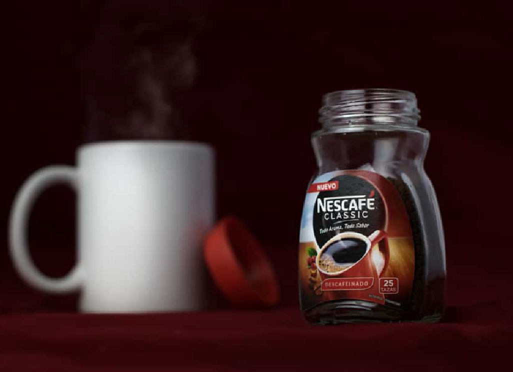
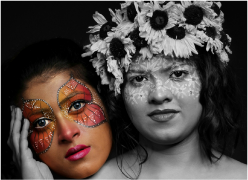

¿Por qué estudiar Fotografía?
La fotografía es una profesión que combina creatividad, técnica y comunicación visual para contar historias a través de imágenes. En esta carrera desarrollarás habilidades para capturar, editar y producir contenido fotográfico con estándares profesionales, utilizando equipos especializados y software de edición. Además, adquirirás las competencias necesarias para desempeñarte en diversos sectores o emprender tu propio proyecto fotográfico.
Fotoperiodismo
Documenta historias
mediante imágenes.
Fotografía publicitaria

Promociona productos,
servicios y marcas.
Fotografía de Eventos
Captura momentos
importantes de eventos.
Fotografía de Retrato

Resalta la personalidad
con retratos creativos.
Dominio de luz natural y artificial
Edición y retoque de imágenes
Producción y edición de video
Manejo de cámaras y accesorios
Premiere Pro
Photoshop
Lightroom
Bridge
Docente
Docente
Docente
Coordinadora de la
carrera
Docente


© 2026 Instituto Técnico Superior Comunitario (ITSC). Todos los derechos reservados.